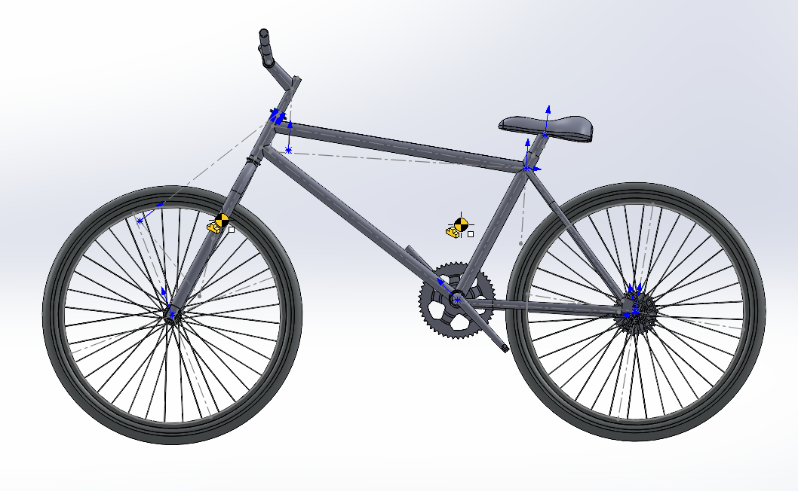
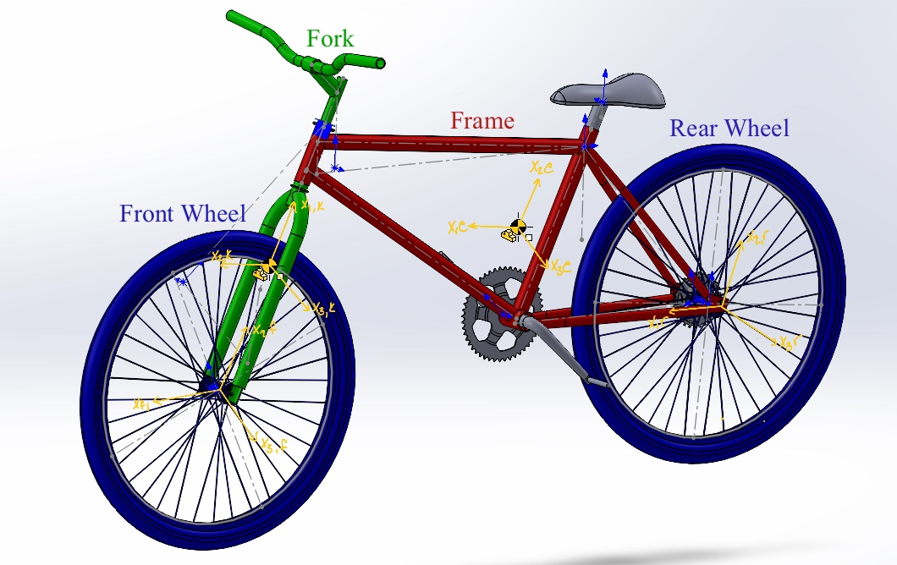
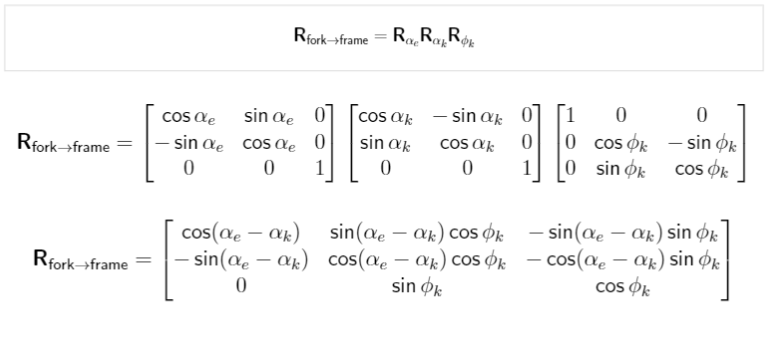
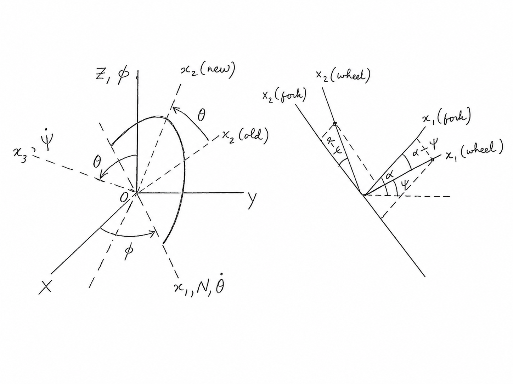
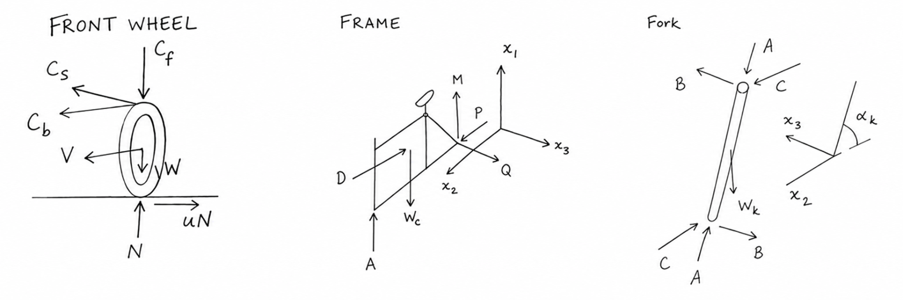
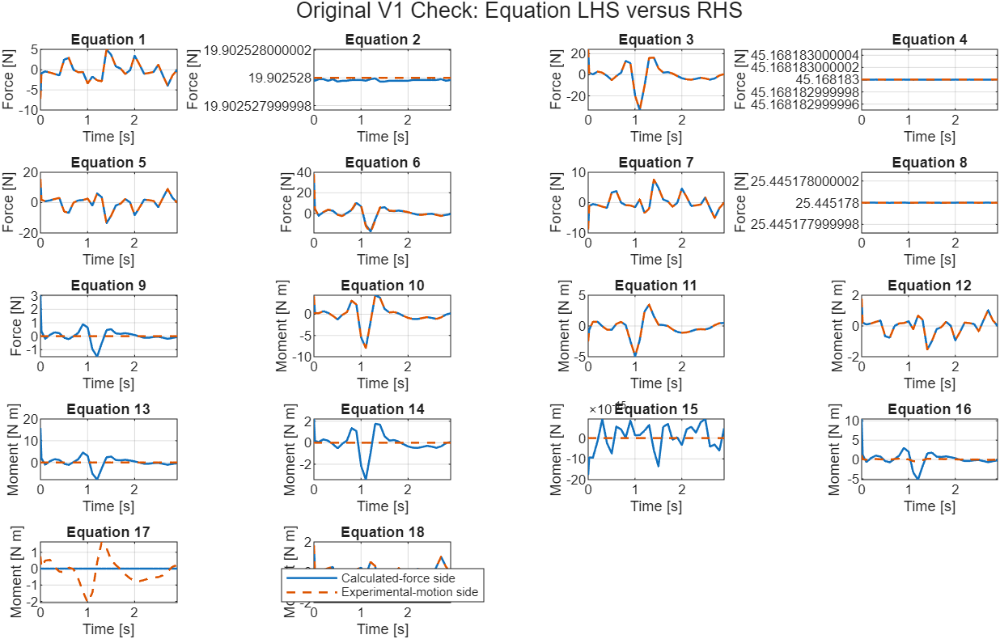

3D Bicycle
Dynamics
PURE Undergraduate Research
University of Calgary
My research involved developing and verifying a four-body model of bicycle motion alongside Dr. Roes Budiman's analytical work. Working with MSc student Haoyuan Jin, I collected and processed experimental ride data and used the existing SolidWorks model to obtain the geometry and mass properties required for the analysis. I then implemented the current simplifying assumptions and 18-equation system in MATLAB as an inverse-dynamics model to evaluate the consistency of the equations, measured motion, and physical parameters.
Four Body Model

Instrumented Bicycle
Experimental bicycle setup used to collect the motion histories supplied to the inverse-dynamics model.


Four Coordinate Systems
Front wheel, fork, frame and rider, and rear wheel labelled on the SolidWorks model with the body-fixed coordinate systems used throughout the derivation.
Multibody Kinematics
With Dr. Budiman, I assigned the body-coordinate definitions and simplified the model through the current kinematic assumptions. Dr. Budiman developed the shared-body relationships using geometric projections, while I independently derived the same relationships using coordinate transformations between the moving body frames. The two methods produced the same result, providing an independent check of the kinematic derivation before it was carried into the dynamic model.


Kinematic Transfer
Body-coordinate definitions, angle conventions, and the rotation matrices used to transfer the shared-joint and centre-of-mass velocity relationships between coordinate systems.
Coupled Dynamics
Newton-Euler force and moment balances describe the external forces, internal reactions, applied torques, and inertial terms acting on each rigid body. Because the four bodies share joints and wheel-ground contact conditions, the unknown reactions and accelerations form one coupled dynamic system.
The equations include weight, wheel-ground contact, internal joint reactions, applied wheel and steering moments, and the inertial terms created by three-dimensional motion. SolidWorks principal inertias were aligned with the mathematical coordinate conventions and mapped into the appropriate body frames.
I aligned notation across the derivations, organized the equations by body and axis, established fixed equation and unknown-vector orders, checked the equation and unknown counts, and incorporated revisions to the contact-force structure before assembling the numerical system.

Free-Body Model
Front wheel, fork, frame and rider, and rear-wheel free-body diagrams showing the external loads and the internal reactions transferred between connected bodies.
MATLAB Inverse-Dynamics Model
Using the existing SolidWorks model and Haoyuan Jin's prior parameter definitions, I obtained the required lengths, rigid-body masses, centre-of-mass locations, and principal inertias. The values were converted to consistent units and mapped into the body-coordinate definitions used by the analytical equations. Front and rear wheel inertias were treated as equal in V1, and additional drivetrain gear inertia was neglected because it is concentrated near the rear axle.
I implemented Dr. Budiman's 18-equation dynamic set using the current V1 assumptions and the measured ride histories. The equations include propulsion and steering relationships together with additional dynamic constraints associated with wheel-ground friction and no-slip motion. Experimental angles and wheel speeds are substituted first, the motion histories are smoothed and differentiated, and the remaining linear system is solved numerically at each time step for 14 unknown forces and torques.

MATLAB Validation
Representative left- and right-side force or moment balances from the 18-equation inverse-dynamics solve, plotted across the measured ride motion to compare equation closure through time.
Conclusion
The V1 inverse-dynamics model now connects the current analytical assumptions, SolidWorks physical parameters, and measured bicycle motion across all 18 dynamic equations and the available experimental trials.